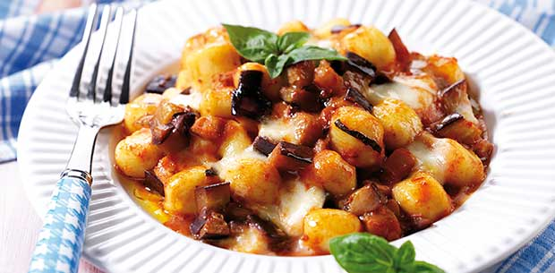
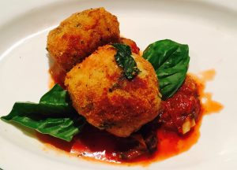
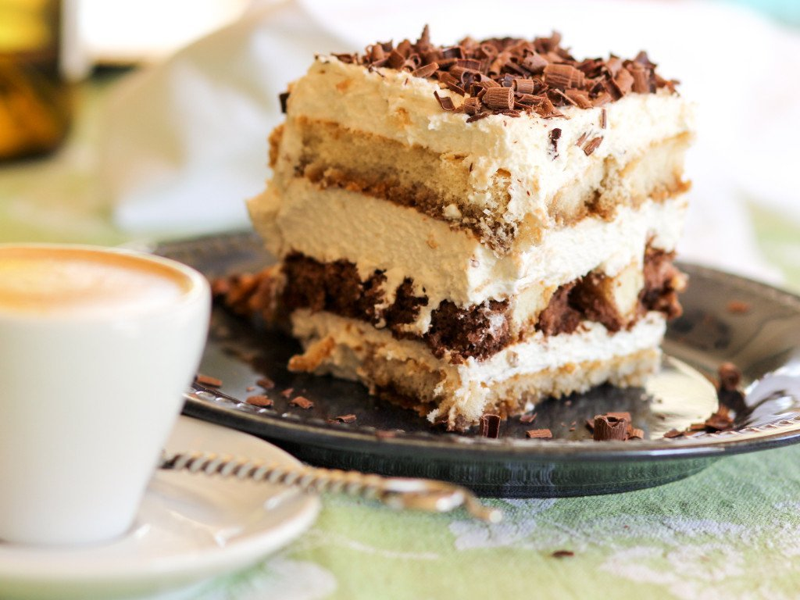
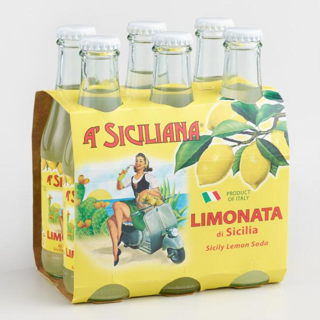

| Photo | Menu Item | Description |
|---|---|---|
|  Retreived from oversixty.com |
Gnocchi | Gnocchi is an Italian potato dumpling that is cooked until soft and covered in a meet sauce and melted Mozzarella cheese. It can also be served with an Alfredo sauce if your pallet prefers a sweeter tasted. |
|  Retreived from thepassionateolive.com |
Arancini | Arancini are deep fried Mozzarella cheese stuffed risotto balls coated with Italian flavored breadcrumbs. They are great finger foods to dip into Marinara or Alfredo sauces. |
|  Retreived from homemadeitaliancooking.com |
Tiramisu | Tiramisu is an Italian desert that will give you a pick me up with its espresso coated ladyfingers flavored with cocoa and whipped cream. |
|  Retreived from worldmarket.com |
Lemonata di Sicilia | Lemonata di Sicilia is a crisp sweet lemon-flavored Sicilian soda that will make you feel you are walking the streets of Sicily. |